小茴香长得有些像孜然，也叫小茴香籽。它在古时被称作“怀香”，古人随身佩戴它，使衣服散发香气，还放在嘴里咀嚼，消除口气，是作为珍贵的香料使用的。现代人有福，小茴香随处可以买到，所以，千万不要错过这大好的补肾佳品。
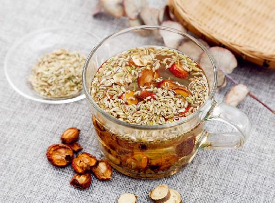
原料：小茴香9克、干山楂（中药名：生山楂）30克、甘草6克。
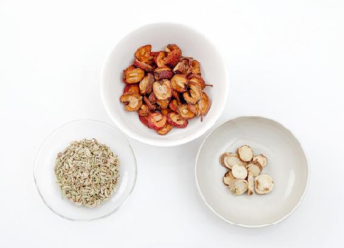
做法：
a 把小茴香放入无油的炒锅，用小火炒1～2分钟，变黄出香味后马上关火。
b 把小茴香和干山楂、甘草用沸水冲泡，焖制20分钟后，当茶饮用。
茴香菜，北方人多用来做馅，其实平时当蔬菜直接食用也很不错。它可以说是我们日常食用的绿色蔬菜中温补肾阳作用最强的，甚至胜过人们普遍认为壮阳的韭菜。
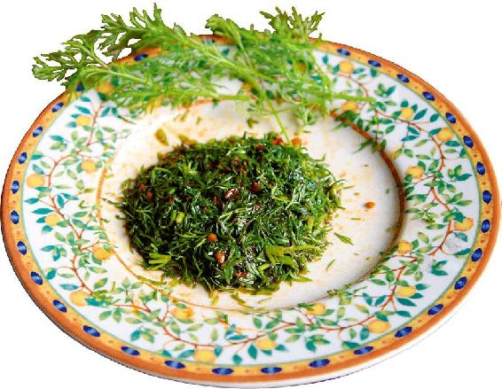
原料：新鲜茴香菜、豆瓣酱、植物油。
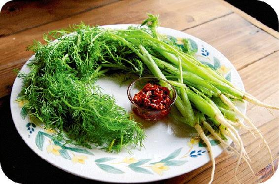
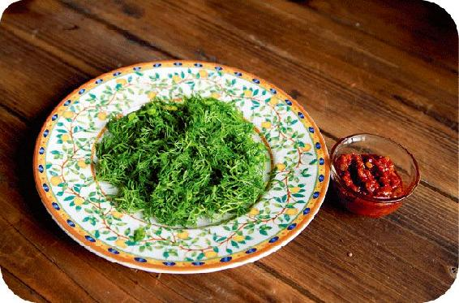
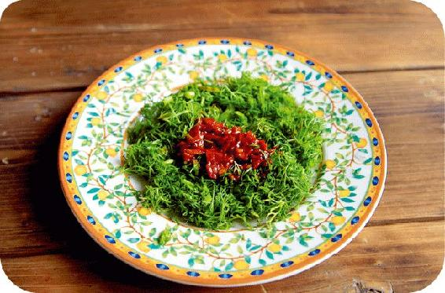
做法：
a 新鲜茴香菜取嫩茎叶切碎，装盘。
b 舀一小勺豆瓣酱放在茴香菜上。
c 锅内放少许油加热，把热油倒在豆瓣酱上，迅速搅拌均匀即可。
白果墨鱼汤是比较平和的大补汤，老少皆宜。阴虚的朋友，如果你喝了觉得身体舒服，可以在整个冬天时常做一些来喝。
原料：白果7粒、墨鱼干1只、肥猪肉50克、枸杞20粒、陈皮1个、生姜3片。
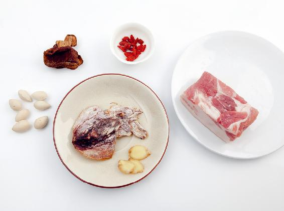
做法：用冷水泡发墨鱼干和白果，放入锅内，加入其他配料，注入冷水，炖1小时后就可以喝了。
允斌叮嘱：感冒、咳嗽痰多、急性病期间，不适宜喝；女性在经期最好少喝。
要闭藏就要先养肾，要全面补肾，才可以防止精气外泄，同时也给身体保暖。我们可以喝一道补肾养藏汤。
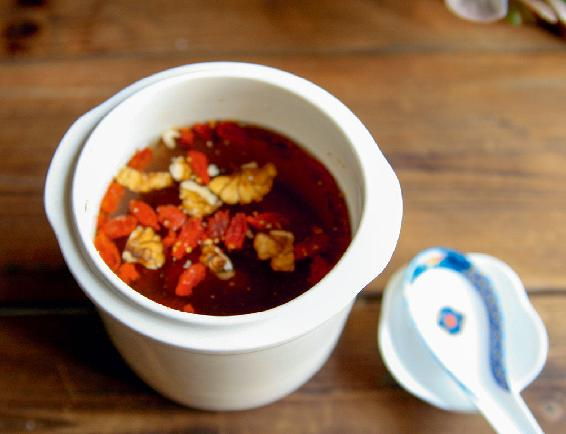
原料：生栗子6个（不要炒栗子）、生核桃6个、枸杞1把，陈皮1/4～1/2个。
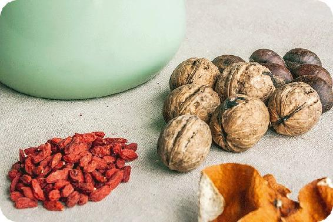
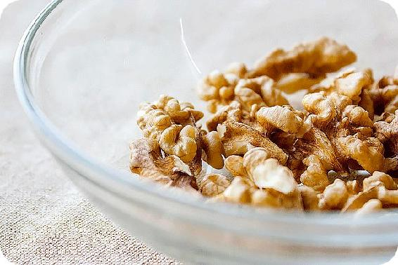
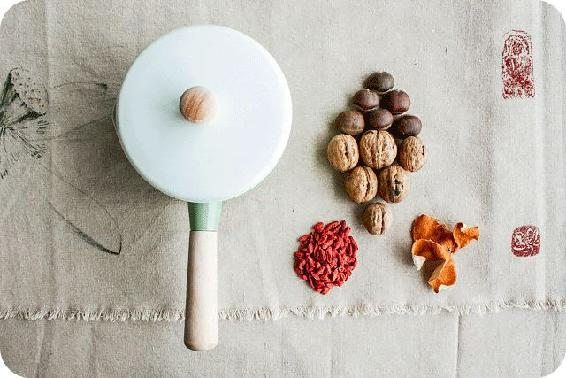
做法：
a 栗子剥去外壳，带内皮切成两半。
b 核桃剥去外壳，掰开。
c 将栗子、核桃、枸杞和陈皮一起冷水下锅，煮开后20～40分钟起锅。
d 用筷子把栗子内皮捞出扔掉。
e 可以加少量糖调味，喝汤，将栗子、核桃和枸杞吃掉。
允斌叮嘱：
a 女性生理期减去枸杞。
b 孕妇喝的话，去掉核桃内皮再煲。
进入大雪节气，可以痛痛快快地开始大补身体，主要以补肾精为主，但要注意进补是补漏洞，补薄弱环节。另外，要避免精气外泄。
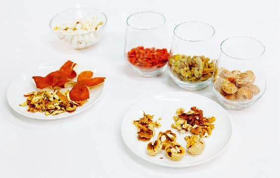
原料：生栗子6个、生核桃6个、莲子6个、枸杞1把、葡萄干1把、陈皮1/4～1/2个（根据大小）。
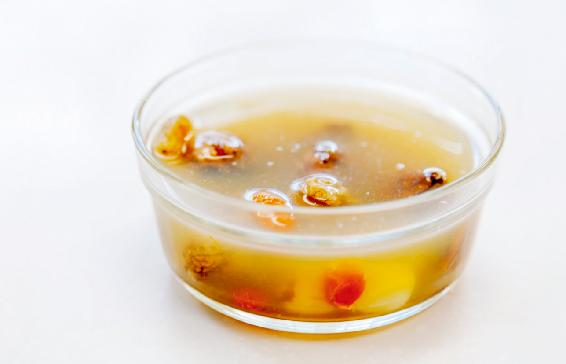
做法：
a 莲子用水泡1～2小时。
b 栗子剥去外壳，带内皮切成两半。
c 核桃剥去外壳，掰开。
d 将所有原料冷水下锅，煮开后20～40分钟起锅。
e 用筷子把栗子内皮捞出扔掉。
f 可以加少量糖调味，喝汤，将栗子、核桃和枸杞吃掉。
冬至是冬天到极点之时，这会天地一片萧瑟。看似没有生机，其实阳气马上要开始萌芽，所以这是天地阴阳转换的关键节点。此时进补，有平时的三倍之功。
（注：素食者可以去掉羊肉，用榴梿壳内的白色部分和榴梿核来煲。）
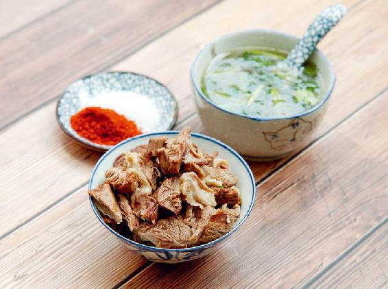
原料：羊肉500～1 000克、黄芪100克、当归（全归）20克、甘蔗2～4节、带皮生姜2块、大枣8个。
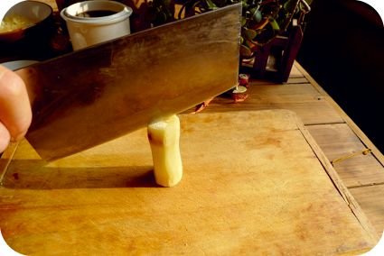
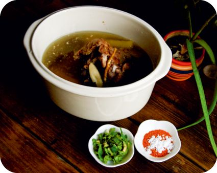
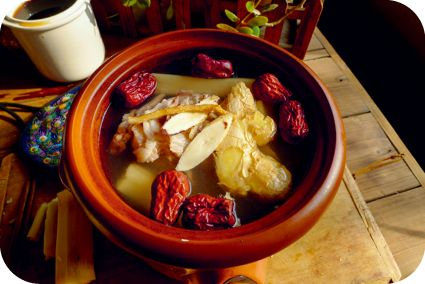
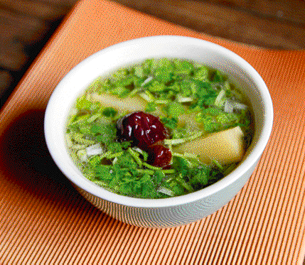
调料（后放）：黄酒50克、香菜50克、胡椒粉、盐、辣椒粉（可不用）少许。
做法：
a 黄芪、当归用清水浸泡30分钟。
b 甘蔗去皮，纵向剖开，生姜拍扁。
c 将羊肉开水下锅，煮出血沫，捞出洗净。
d 将全部原料下锅，大火煮开，放黄酒转中火炖1小时。
e 放入胡椒粉，关火起锅。
f 在汤碗里放入香菜末和少许盐，将羊肉汤盛入汤碗。
g 将羊肉捞出，切成块，蘸着盐和辣椒粉做成的调料食用。
允斌叮嘱：
a 盐不可下锅。
b 湿气重的人可以放十几粒花椒一起炖。
c 患感冒时，汤里不能放黄芪。
d 没有甘蔗可以放牛蒡。
e 黄芪和当归要保持5∶1的比例。
f 虚不受补的人，可以提前一两天喝开路汤，散散表邪。
凡是进补，都要给病气留下一个排出的通道。我们进补的时候，不论怎样大补，总要配一点“泄”的东西，才不会变成“呆补”。
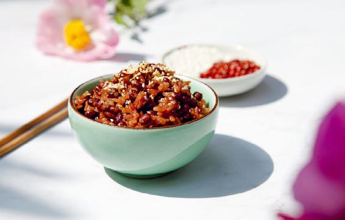
原料：红小豆100克、糯米100克、油（最好用猪油或黄油）、盐、芝麻各少许。
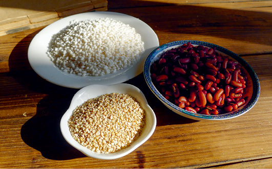
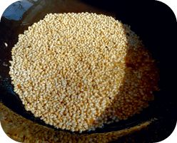
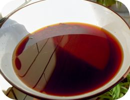
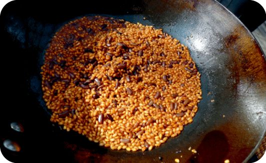
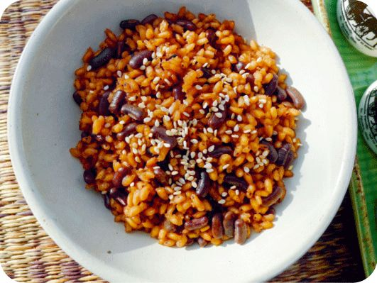
做法：
a 红小豆放锅内，注入适量清水，煮开后10分钟关火。
b 炒锅内多放油，烧热后放少许盐，放糯米用小火不停翻炒。
c 炒到糯米微微发黄，把红豆连汤一起倒入，小火焖熟后起锅。
d 芝麻放炒锅内，不要加油，开小火炒香，撒在焖好的糯米红豆饭上。
消寒糯米饭能给我们的身体增加热量，既滋补，又健脾胃。这个饭吃起来又香又甜，孩子经常吃，就能长得胖一点。
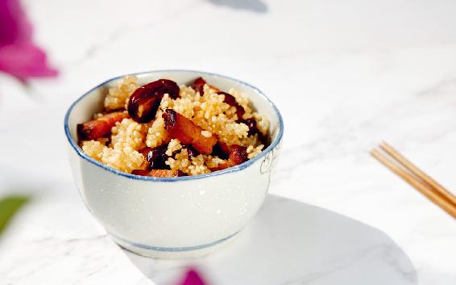
原料：糯米100克、红枣10个、腊肉50克、猪板油、陈皮少许。
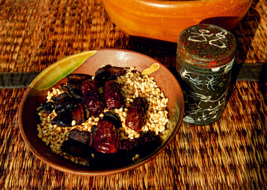
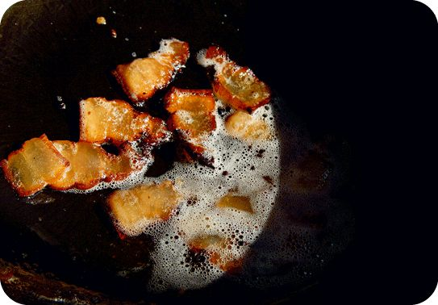
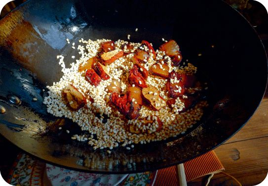
做法：
a 糯米泡2小时后，沥干水分。
b 腊肉切片，红枣掰开去核备用。
c 猪板油下锅加少许陈皮，炼出猪油，捞出油渣和陈皮。
d 锅里继续放腊肉煸出油，捞出腊肉。
e 放入糯米，用小火不停翻炒，炒到九成熟，放入掰开的红枣，等红枣局部变黑，出焦香味后，加入腊肉一起拌匀。
f 出锅沥干油。
允斌叮嘱：痰多的时候暂时不要吃。
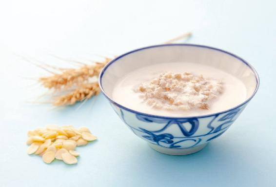
拿出手机扫一扫上方的二维码，即可观看陈允斌老师示范的家传食方制作视频。